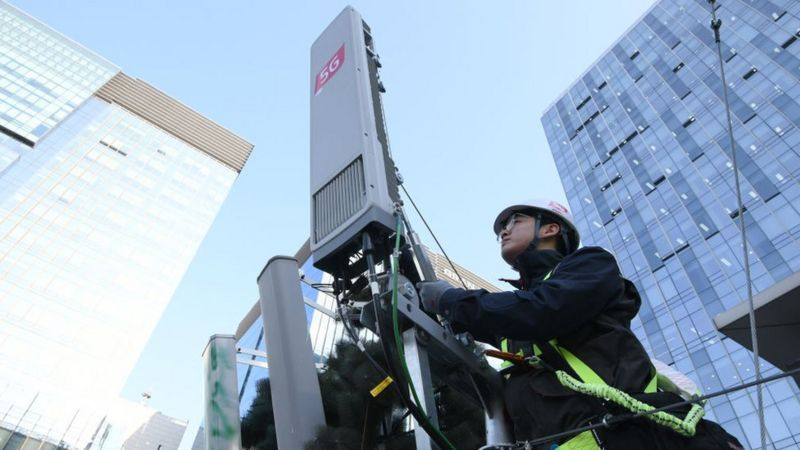
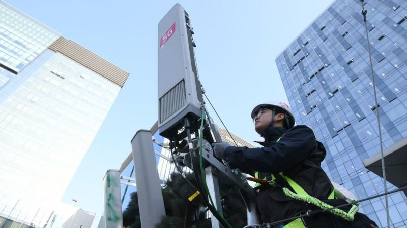

NOTICIAS
Apple prepara su ruptura con Google
Apple está trabajando para crear su propio buscador y dejar de depender de Google.
Así lo afirma el Financial Times, que ha descubierto que la empresa de la manzana
mordida ha comenzado a añadir funciones en iOS 14 y a intensificar la labor de su
bot de búsqueda. Esta herramienta, conocida como Applebot, es empleada por la compañía
para recopilar datos de material en internet y ha incrementado su actividad recientemente,
según expertos en el sector.
Quién vigila la radiación del 5G
Los campos electromagnéticos están presentes en la naturaleza desde antes de la aparición
del ser humano. La luz solar, los rayos cósmicos, las tormentas y la radiación natural terrestre
son fuentes de exposición a estos campos.A mediados de los años 90, se comenzaron a desplegar
las redes de antenas de telefonía móvil. Aunque se hacían con estándares técnicos internacionales,
que ya tenían en cuenta la protección de la población, no se ofreció la suficiente información al respecto.

Enlaces de interes

Informacion de Contacto
- Correo: zeus.olimpo@mundo.com
- Telefono: 999999999
- Direccion: Narnia
- DNI: 12345678
Siguenos en
- YouTube
Enlaces de interes
Menú
- Inicio
- Curriculum
- Proyectos
- Contactos